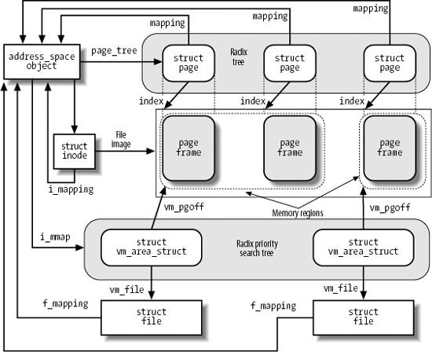

{% include JB/setup %}
{% raw %}
<div>


<a name="understandlk-CHP-16-SECT-2"></a>
<h3 class="docSection1Title">16.2. Memory Mapping</h3><a name="IDX-CHP-16-3981"></a>
<a name="IDX-CHP-16-3982"></a>
<a name="IDX-CHP-16-3983"></a>
<a name="IDX-CHP-16-3984"></a>
<a name="IDX-CHP-16-3985"></a>
<a name="IDX-CHP-16-3986"></a>
<p class="docText1">As already mentioned in the section "<a class="pcalibre5 docLink pcalibre1" href="understandlk-CHP-9-SECT-3.html#understandlk-CHP-9-SECT-3">Memory Regions</a>" in <a class="pcalibre5 docLink pcalibre1" href="understandlk-CHP-9.html#understandlk-CHP-9">Chapter 9</a>, a memory region can be associated with some portion of either a regular file in a disk-based filesystem or a block device file. This means that an access to a byte within a page of the memory region is translated by the kernel into an operation on the corresponding byte of the file. This technique is called <span class="docEmphasis">memory mapping</span>.</p>
<p class="docText1">Two kinds of memory mapping exist:</p>
<a name="IDX-CHP-16-3987"></a><a name="IDX-CHP-16-3988"></a><dl class="docText1"><dt class="calibre7"><br class="calibre7"/><p class="calibre14"><span class="docPubcolor"><span class="docEmphasis">Shared</span></span></p></dt>
<dd class="calibre20"><p class="docList">Each write operation on the pages of the memory region changes the file on disk; moreover, if a process writes into a page of a shared<a name="IDX-CHP-16-3987"></a> 
 memory mapping, the changes are visible to all other processes that map the same file.</p></dd><dt class="calibre7"><br class="calibre7"/><p class="calibre14"><span class="docPubcolor"><span class="docEmphasis">Private</span></span></p></dt>
<dd class="calibre20"><p class="docList">Meant to be used when the process creates the mapping just to read the file, not to write it. For this purpose, private<a name="IDX-CHP-16-3988"></a> 
 mapping is more efficient than shared mapping. But each write operation on a privately mapped page will cause it to stop mapping the page in the file. Thus, a write does not change the file on disk, nor is the change visible to any other processes that access the same file. However, pages of a private memory mapping that have not been modified by the process are affected by file updates performed by other processes.</p></dd></dl>
<p class="docText1">A process can create a new memory mapping by issuing an <tt class="calibre25">mmap( )</tt> system call (see the section "<a class="pcalibre5 docLink pcalibre1" href="#understandlk-CHP-16-SECT-2.2">Creating a Memory Mapping</a>" later in this chapter). Programmers must specify either the <tt class="calibre25">MAP_SHARED</tt> flag or the <tt class="calibre25">MAP_PRIVATE</tt> flag as a parameter of the system call; as you can easily guess, in the former case the mapping is shared, while in the latter it is private. Once the mapping is created, the process can read the data stored in the file by simply reading from the memory locations of the new memory region. If the memory mapping is shared, the process can also modify the corresponding file by simply writing into the same memory locations. To destroy or shrink a memory mapping, the process may use the <tt class="calibre25">munmap( )</tt> system call (see the later section "<a class="pcalibre5 docLink pcalibre1" href="#understandlk-CHP-16-SECT-2.3">Destroying a Memory Mapping</a>").</p>
<p class="docText1">As a general rule, if a memory mapping is shared, the corresponding memory region has the <tt class="calibre25">VM_SHARED</tt> flag set; if it is private, the <tt class="calibre25">VM_SHARED</tt> flag is cleared. As we'll see later, an exception to this rule exists for read-only shared memory mappings.</p>
<a name="understandlk-CHP-16-SECT-2.1"></a>
<h4 class="docSection2Title">16.2.1. Memory Mapping Data Structures</h4><a name="IDX-CHP-16-3989"></a>
<a name="IDX-CHP-16-3990"></a>
<a name="IDX-CHP-16-3991"></a>
<a name="IDX-CHP-16-3992"></a>
<p class="docText1">A memory mapping is represented by a combination of the following data structures<a name="IDX-CHP-16-3993"></a> 
:</p>
<ul class="calibre11"><li class="calibre12"><p class="docText1">The inode object associated with the mapped file</p></li><li class="calibre12"><p class="docText1">The <tt class="calibre25">address_space</tt> object of the mapped file</p></li><li class="calibre12"><p class="docText1">A file object for each different mapping performed on the file by different processes</p></li><li class="calibre12"><p class="docText1">A <tt class="calibre25">vm_area_struct</tt> descriptor for each different mapping on the file</p></li><li class="calibre12"><p class="docText1">A page descriptor for each page frame assigned to a memory region that maps the file</p></li></ul>
<p class="docText1"><a class="pcalibre5 docLink pcalibre1" href="#understandlk-CHP-16-FIG-2">Figure 16-2</a> illustrates how the data structures are linked. On the left side of the image we show the inode, which identifies the file. The <tt class="calibre25">i_mapping</tt> field of each inode object points to the <tt class="calibre25">address_space</tt> object of the file. In turn, the <tt class="calibre25">page_tree</tt> field of each <tt class="calibre25">address_space</tt> object points to the radix tree of pages belonging to the address space (see the section "<a class="pcalibre5 docLink pcalibre1" href="understandlk-CHP-15-SECT-1.html#understandlk-CHP-15-SECT-1.2">The Radix Tree</a>" in <a class="pcalibre5 docLink pcalibre1" href="understandlk-CHP-15.html#understandlk-CHP-15">Chapter 15</a>), while the <tt class="calibre25">i_mmap</tt> field points to a second tree called the radix priority search tree (PST) of memory regions belonging to the address space. The main use of PST is for performing "reverse mapping," that is, for identifying quickly all processes that share a given page. We'll cover in detail PSTs in the next chapter, because they are used for page frame reclaiming. The link between file objects relative to the same file and the inode is established by means of the <tt class="calibre25">f_mapping</tt> field.</p>
<p class="docText1">Each memory region descriptor has a <tt class="calibre25">vm_file</tt> field that links it to the file object of the mapped file (if that field is null, the memory region is not used in a memory mapping). The position of the first mapped location is stored into the <tt class="calibre25">vm_pgoff</tt> field of the memory region descriptor; it represents the file offset as a number of page-size units. The length of the mapped file portion is simply the length of the memory region, which can be computed from the <tt class="calibre25">vm_start</tt> and <tt class="calibre25">vm_end</tt> fields.</p>
<a name="understandlk-CHP-16-FIG-2"></a><p class="calibre14"><center class="calibre8">
<h5 class="docFigureTitle">Figure 16-2. Data structures for file memory mapping</h5>
</center></p><br class="calibre7"/>
<p class="docText1">Pages of shared memory mappings are always included in the page cache; pages of private memory mappings are included in the page cache as long as they are unmodified. When a process tries to modify a page of a private memory mapping, the kernel duplicates the page frame and replaces the original page frame with the duplicate in the process Page Table; this is one of the applications of the Copy On Write mechanism that we discussed in <a class="pcalibre5 docLink pcalibre1" href="understandlk-CHP-8.html#understandlk-CHP-8">Chapter 8</a>. The original page frame still remains in the page cache, although it no longer belongs to the memory mapping since it is replaced by the duplicate. In turn, the duplicate is not inserted into the page cache because it no longer contains valid data representing the file on disk.</p>
<p class="docText1"><a class="pcalibre5 docLink pcalibre1" href="#understandlk-CHP-16-FIG-2">Figure 16-2</a> also shows a few page descriptors of pages included in the page cache that refer to the memory-mapped file. Notice that the first memory region in the figure is three pages long, but only two page frames are allocated for it; presumably, the process owning the memory region has never accessed the third page.</p>
<p class="docText1">The kernel offers several hooks to customize the memory mapping mechanism for every different filesystem. The core of memory mapping implementation is delegated to a file object's method named <tt class="calibre25">mmap</tt>. For most disk-based filesystems and for block device files, this method is implemented by a general function called <tt class="calibre25">generic_file_mmap( )</tt>, which is described in the next section.</p>
<p class="docText1">File memory mapping depends on the demand paging<a name="IDX-CHP-16-3994"></a> 
 mechanism described in the section "<a class="pcalibre5 docLink pcalibre1" href="understandlk-CHP-9-SECT-4.html#understandlk-CHP-9-SECT-4.3">Demand Paging</a>" in <a class="pcalibre5 docLink pcalibre1" href="understandlk-CHP-9.html#understandlk-CHP-9">Chapter 9</a>. In fact, a newly established memory mapping is a memory region that doesn't include any page; as the process references an address inside the region, a Page Fault occurs and the Page Fault handler checks whether the <tt class="calibre25">nopage</tt> method of the memory region is defined. If <tt class="calibre25">nopage</tt> is not defined, the memory region doesn't map a file on disk; otherwise, it does, and the method takes care of reading the page by accessing the block device. Almost all disk-based filesystems and block device files implement the <tt class="calibre25">nopage</tt> method by means of the <tt class="calibre25">filemap_nopage( )</tt> function.</p>
<a name="understandlk-CHP-16-SECT-2.2"></a>
<h4 class="docSection2Title">16.2.2. Creating a Memory Mapping</h4><a name="IDX-CHP-16-3995"></a>
<a name="IDX-CHP-16-3996"></a>
<a name="IDX-CHP-16-3997"></a>
<a name="IDX-CHP-16-3998"></a>
<a name="IDX-CHP-16-3999"></a>
<p class="docText1">To create a new memory mapping, a process issues an <tt class="calibre25">mmap( )</tt> system call, passing the following parameters to it:</p>
<ul class="calibre11"><li class="calibre12"><p class="docText1">A file descriptor identifying the file to be mapped.</p></li><li class="calibre12"><p class="docText1">An offset inside the file specifying the first character of the file portion to be mapped.</p></li><li class="calibre12"><p class="docText1">The length of the file portion to be mapped.</p></li><li class="calibre12"><p class="docText1">A set of flags. The process must explicitly set either the <tt class="calibre25">MAP_SHARED</tt> flag or the <tt class="calibre25">MAP_PRIVATE</tt> flag to specify the kind of memory mapping requested.<sup class="docFootnote"><a class="pcalibre5 docLink pcalibre1" href="#understandlk-CHP-16-FN6">[*]</a></sup></p><blockquote class="calibre22"><p class="docFootnote1"><sup class="calibre24"><a name="understandlk-CHP-16-FN6">[*]</a></sup> The process could also set the <tt class="calibre42">MAP_ANONYMOUS</tt> flag to specify that the new memory region is anonymous  that is, not associated with any disk-based file (see the section "<a class="pcalibre5 docLink pcalibre1" href="understandlk-CHP-9-SECT-4.html#understandlk-CHP-9-SECT-4.3">Demand Paging</a>" in <a class="pcalibre5 docLink pcalibre1" href="understandlk-CHP-9.html#understandlk-CHP-9">Chapter 9</a>). A process can also create a memory region that is both <tt class="calibre42">MAP_SHARED</tt> and <tt class="calibre42">MAP_ANONYMOUS</tt>: in this case, the region maps a special file in the <span class="docEmphasis">tmpfs</span><a name="IDX-CHP-16-4000"></a> 
 filesystem (see the section "<a class="pcalibre5 docLink pcalibre1" href="understandlk-CHP-19-SECT-3.html#understandlk-CHP-19-SECT-3.5">IPC Shared Memory</a>" in <a class="pcalibre5 docLink pcalibre1" href="understandlk-CHP-19.html#understandlk-CHP-19">Chapter 19</a>), which can be accessed by all the process's descendants.</p></blockquote></li><li class="calibre12"><p class="docText1">A set of permissions specifying one or more types of access to the memory region: read access (<tt class="calibre25">PROT_READ</tt>), write access (<tt class="calibre25">PROT_WRITE</tt>), or execution access (<tt class="calibre25">PROT_EXEC</tt>).</p></li><li class="calibre12"><p class="docText1">An optional linear address, which is taken by the kernel as a hint of where the new memory region should start. If the <tt class="calibre25">MAP_FIXED</tt> flag is specified and the kernel cannot allocate the new memory region starting from the specified linear address, the system call fails.</p></li></ul>
<p class="docText1">The <tt class="calibre25">mmap( )</tt> system call returns the linear address of the first location in the new memory region. For compatibility reasons, in the 80 x 86 architecture, the kernel reserves two entries in the system call table for <tt class="calibre25">mmap( )</tt><a name="IDX-CHP-16-4001"></a> 
: one at index 90 and the other at index 192. The former entry corresponds to the <tt class="calibre25">old_mmap( )</tt> service routine (used by older C libraries), while the latter one corresponds to the <tt class="calibre25">sys_mmap2( )</tt> service routine (used by recent C libraries). The two service routines differ only in how the six parameters of the system call are passed. Both of them end up invoking the <tt class="calibre25">do_mmap_pgoff( )</tt> function described in the section "<a class="pcalibre5 docLink pcalibre1" href="understandlk-CHP-9-SECT-3.html#understandlk-CHP-9-SECT-3.4">Allocating a Linear Address Interval</a>" in <a class="pcalibre5 docLink pcalibre1" href="understandlk-CHP-9.html#understandlk-CHP-9">Chapter 9</a>. We now complete that description by detailing the steps performed only when creating a memory region that maps a file. We thus describe the case where the <tt class="calibre25">file</tt> parameter (pointer to a file object) of <tt class="calibre25">do_mmap_pgoff( )</tt> is non-null. For the sake of clarity, we refer to the enumeration used to describe <tt class="calibre25">do_mmap_pgoff( )</tt> and point out the additional steps performed under the new condition.</p>
<dl class="docText1"><dt class="calibre7"><br class="calibre7"/><p class="calibre14"><span class="docPubcolor"><span class="docEmphasis">Step 1</span></span></p></dt>
<dd class="calibre20"><p class="docList">Checks whether the <tt class="calibre25">mmap</tt> file operation for the file to be mapped is defined; if not, it returns an error code. A <tt class="calibre25">NULL</tt> value for <tt class="calibre25">mmap</tt> in the file operation table indicates that the corresponding file cannot be mapped (for instance, because it is a directory).</p></dd><dt class="calibre7"><br class="calibre7"/><p class="calibre14"><span class="docPubcolor"><span class="docEmphasis">Step 2</span></span></p></dt>
<dd class="calibre20"><p class="docList">The <tt class="calibre25">get_unmapped_area( )</tt> function invokes the <tt class="calibre25">get_unmapped_area</tt> method of the file object, if it is defined, so as to allocate an interval of linear addresses suitable for the memory mapping of the file. The disk-based filesystems do not define this method; in this case, as explained in the section "<a class="pcalibre5 docLink pcalibre1" href="understandlk-CHP-9-SECT-3.html#understandlk-CHP-9-SECT-3.3">Memory Region Handling</a>" in <a class="pcalibre5 docLink pcalibre1" href="understandlk-CHP-9.html#understandlk-CHP-9">Chapter 9</a>, the <tt class="calibre25">get_unmapped_area( )</tt> function ends up invoking the <tt class="calibre25">get_unmapped_area</tt> method of the memory descriptor.</p></dd><dt class="calibre7"><br class="calibre7"/><p class="calibre14"><span class="docPubcolor"><span class="docEmphasis">Step 3</span></span></p></dt>
<dd class="calibre20"><p class="docList">In addition to the usual consistency checks, it compares the kind of memory mapping requested (stored in the <tt class="calibre25">flags</tt> parameter of the <tt class="calibre25">mmap( )</tt> system call) and the flags specified when the file was opened (stored in the <tt class="calibre25">file-&gt;f_mode</tt> field). In particular:</p>
<ul class="calibre66"><li class="calibre12"><p class="docList">If a shared writable memory mapping is required, it checks that the file was opened for writing and that it was not opened in append mode (<tt class="calibre25">O_APPEND</tt> flag of the <tt class="calibre25">open( )</tt> system call).</p></li><li class="calibre12"><p class="docList">If a shared memory mapping is required, it checks that there is no mandatory lock on the file (see the section "<a class="pcalibre5 docLink pcalibre1" href="understandlk-CHP-12-SECT-7.html#understandlk-CHP-12-SECT-7">File Locking</a>" in <a class="pcalibre5 docLink pcalibre1" href="understandlk-CHP-12.html#understandlk-CHP-12">Chapter 12</a>).</p></li><li class="calibre12"><p class="docList">For every kind of memory mapping, it checks that the file was opened for reading.</p></li></ul>
<p class="docList">If any of these conditions is not fulfilled, an error code is returned.</p>
<p class="docList">Moreover, when initializing the value of the <tt class="calibre25">vm_flags</tt> field of the new memory region descriptor, it sets the <tt class="calibre25">VM_READ</tt>, <tt class="calibre25">VM_WRITE</tt>, <tt class="calibre25">VM_EXEC</tt>, <tt class="calibre25">VM_SHARED</tt>, <tt class="calibre25">VM_MAYREAD</tt>, <tt class="calibre25">VM_MAYWRITE</tt>, <tt class="calibre25">VM_MAYEXEC</tt>, and <tt class="calibre25">VM_MAYSHARE</tt> flags according to the access rights of the file and the kind of requested memory mapping (see the section "<a class="pcalibre5 docLink pcalibre1" href="understandlk-CHP-9-SECT-3.html#understandlk-CHP-9-SECT-3.2">Memory Region Access Rights</a>" in <a class="pcalibre5 docLink pcalibre1" href="understandlk-CHP-9.html#understandlk-CHP-9">Chapter 9</a>). As an optimization, the <tt class="calibre25">VM_SHARED</tt> and <tt class="calibre25">VM_MAYWRITE</tt> flags are cleared for nonwritable shared memory mapping. This can be done because the process is not allowed to write into the pages of the memory region, so the mapping is treated the same as a private mapping; however, the kernel actually allows other processes that share the file to read the pages in this memory region.</p></dd><dt class="calibre7"><br class="calibre7"/><p class="calibre14"><span class="docPubcolor"><span class="docEmphasis">Step 10</span></span></p></dt>
<dd class="calibre20"><p class="docList">Initializes the <tt class="calibre25">vm_file</tt> field of the memory region descriptor with the address of the file object and increases the file's usage counter. Invokes the <tt class="calibre25">mmap</tt> method for the file being mapped, passing as parameters the address of the file object and the address of the memory region descriptor. For most filesystems, this method is implemented by the <tt class="calibre25">generic_file_mmap( )</tt> function, which performs the following operations:</p>
<div class="calibre44"><ol class="docList4" type="a"><li class="calibre12"><div class="calibre45"><p class="docList">Stores the current time in the <tt class="calibre25">i_atime</tt> field of the file's inode and marks the inode as dirty.</p></div></li><li class="calibre12"><div class="calibre45"><p class="docList">Initializes the <tt class="calibre25">vm_ops</tt> field of the memory region descriptor with the address of the <tt class="calibre25">generic_file_vm_ops</tt> table. All methods in this table are null, except the <tt class="calibre25">nopage</tt> method, which is implemented by the <tt class="calibre25">filemap_nopage( )</tt> function, and the <tt class="calibre25">populate</tt> method, which is implemented by the <tt class="calibre25">filemap_populate( )</tt> function (see "<a class="pcalibre5 docLink pcalibre1" href="#understandlk-CHP-16-SECT-2.6">Non-Linear Memory Mappings</a>" later in this chapter).</p></div></li></ol></div></dd><dt class="calibre7"><br class="calibre7"/><p class="calibre14"><span class="docPubcolor"><span class="docEmphasis">Step 11</span></span></p></dt>
<dd class="calibre20"><p class="docList">Increases the <tt class="calibre25">i_writecount</tt> field of the file's inode, that is, the usage counter for writing processes.</p></dd></dl>
<a name="understandlk-CHP-16-SECT-2.3"></a>
<h4 class="docSection2Title">16.2.3. Destroying a Memory Mapping</h4><a name="IDX-CHP-16-4002"></a>
<a name="IDX-CHP-16-4003"></a>
<a name="IDX-CHP-16-4004"></a>
<a name="IDX-CHP-16-4005"></a>
<a name="IDX-CHP-16-4006"></a>
<a name="IDX-CHP-16-4007"></a>
<a name="IDX-CHP-16-4008"></a>
<a name="IDX-CHP-16-4009"></a>
<p class="docText1">When a process is ready to destroy a memory mapping, it invokes <tt class="calibre25">munmap( )</tt>; this system call can also be used to reduce the size of each kind of memory region. The parameters used are:</p>
<ul class="calibre11"><li class="calibre12"><p class="docText1">The address of the first location in the linear address interval to be removed.</p></li><li class="calibre12"><p class="docText1">The length of the linear address interval to be removed.</p></li></ul>
<p class="docText1">The <tt class="calibre25">sys_munmap( )</tt> service routine of the system call essentially invokes the <tt class="calibre25">do_munmap( )</tt> function already described in the section "<a class="pcalibre5 docLink pcalibre1" href="understandlk-CHP-9-SECT-3.html#understandlk-CHP-9-SECT-3">Releasing a Linear Address Interval</a>" in <a class="pcalibre5 docLink pcalibre1" href="understandlk-CHP-9.html#understandlk-CHP-9">Chapter 9</a>. Notice that there is no need to flush to disk the contents of the pages included in a writable shared memory mapping to be destroyed. In fact, these pages continue to act as a disk cache because they are still included in the page cache.</p>
<a name="understandlk-CHP-16-SECT-2.4"></a>
<h4 class="docSection2Title">16.2.4. Demand Paging for Memory Mapping</h4><a name="IDX-CHP-16-4010"></a>
<a name="IDX-CHP-16-4011"></a>
<a name="IDX-CHP-16-4012"></a>
<p class="docText1">For reasons of efficiency, page frames are not assigned to a memory mapping right after it has been created, but at the last possible momentthat is, when the process attempts to address one of its pages, thus causing a Page Fault<a name="IDX-CHP-16-4013"></a> 
 exception.</p>
<p class="docText1">We saw in the section "<a class="pcalibre5 docLink pcalibre1" href="understandlk-CHP-9-SECT-4.html#understandlk-CHP-9-SECT-4">Page Fault Exception Handler</a>" in <a class="pcalibre5 docLink pcalibre1" href="understandlk-CHP-9.html#understandlk-CHP-9">Chapter 9</a> how the kernel verifies whether the faulty address is included in some memory region of the process; if so, the kernel checks the Page Table entry corresponding to the faulty address and invokes the <tt class="calibre25">do_no_page( )</tt> function if the entry is null (see the section "<a class="pcalibre5 docLink pcalibre1" href="understandlk-CHP-9-SECT-4.html#understandlk-CHP-9-SECT-4.3">Demand Paging</a>" in <a class="pcalibre5 docLink pcalibre1" href="understandlk-CHP-9.html#understandlk-CHP-9">Chapter 9</a>).</p>
<p class="docText1">The <tt class="calibre25">do_no_page( )</tt> function performs all the operations that are common to all types of demand paging, such as allocating a page frame and updating the Page Tables. It also checks whether the <tt class="calibre25">nopage</tt> method of the memory region involved is defined. In the section "<a class="pcalibre5 docLink pcalibre1" href="understandlk-CHP-9-SECT-4.html#understandlk-CHP-9-SECT-4.3">Demand Paging</a>" in <a class="pcalibre5 docLink pcalibre1" href="understandlk-CHP-9.html#understandlk-CHP-9">Chapter 9</a>, we described the case in which the method is undefined (anonymous memory region); now we complete the description by discussing the main actions performed by the function when the method is defined:</p>
<div class="calibre44"><ol class="docList1" type="1"><li class="calibre12"><div class="calibre45"><p class="docList">Invokes the <tt class="calibre25">nopage</tt> method, which returns the address of a page frame that contains the requested page.</p></div></li><li class="calibre12"><div class="calibre45"><p class="docList">If the process is trying to write into the page and the memory mapping is private, it avoids a future Copy On Write fault by making a copy of the page just read and inserting it into the inactive list of pages (see <a class="pcalibre5 docLink pcalibre1" href="understandlk-CHP-17.html#understandlk-CHP-17">Chapter 17</a>). If the private memory mapping region does not already have a slave anonymous memory region that includes the new page, it either adds a new slave anonymous memory region or extends an existing one (see the section "<a class="pcalibre5 docLink pcalibre1" href="understandlk-CHP-9-SECT-3.html#understandlk-CHP-9-SECT-3">Memory Regions</a>" in <a class="pcalibre5 docLink pcalibre1" href="understandlk-CHP-9.html#understandlk-CHP-9">Chapter 9</a>). In the following steps, the function uses the new page instead of the page returned by the <tt class="calibre25">nopage</tt> method, so that the latter is not modified by the User Mode process.</p></div></li><li class="calibre12"><div class="calibre45"><p class="docList">If some other process has truncated or invalidated the page (the <tt class="calibre25">truncate_count</tt> field of the <tt class="calibre25">address_space</tt> descriptor is used for this kind of check), the function retries getting the page by jumping back to step 1.</p></div></li><li class="calibre12"><div class="calibre45"><p class="docList">Increases the <tt class="calibre25">rss</tt> field of the process memory descriptor to indicate that a new page frame has been assigned to the process.</p></div></li><li class="calibre12"><div class="calibre45"><p class="docList">Sets up the Page Table entry corresponding to the faulty address with the address of the page frame and the page access rights included in the memory region <tt class="calibre25">vm_page_prot</tt> field.</p></div></li><li class="calibre12"><div class="calibre45"><p class="docList">If the process is trying to write into the page, it forces the <tt class="calibre25">Read/Write</tt> and <tt class="calibre25">Dirty</tt> bits of the Page Table entry to 1. In this case, either the page frame is exclusively assigned to the process, or the page is shared; in both cases, writing to it should be allowed.</p></div></li></ol></div>
<p class="docText1">The core of the demand paging algorithm consists of the memory region's <tt class="calibre25">nopage</tt> method. Generally speaking, it must return the address of a page frame that contains the page accessed by the process. Its implementation depends on the kind of memory region in which the page is included.</p>
<p class="docText1">When handling memory regions that map files on disk, the <tt class="calibre25">nopage</tt> method must first search for the requested page in the page cache. If the page is not found, the method must read it from disk. Most filesystems implement the <tt class="calibre25">nopage</tt> method by means of the <tt class="calibre25">filemap_nopage( )</tt> function, which receives three parameters:</p>
<dl class="docText1"><dt class="calibre7"><br class="calibre7"/><p class="calibre14"><span class="docPubcolor"><span class="docPubcolor"><span class="docMonofont">area</span></span></span></p></dt>
<dd class="calibre20"><p class="docList">Descriptor address of the memory region, including the required page</p></dd><dt class="calibre7"><br class="calibre7"/><p class="calibre14"><span class="docPubcolor"><span class="docPubcolor"><span class="docMonofont">address</span></span></span></p></dt>
<dd class="calibre20"><p class="docList">Linear address of the required page</p></dd><dt class="calibre7"><br class="calibre7"/><p class="calibre14"><span class="docPubcolor"><span class="docPubcolor"><span class="docMonofont">type</span></span></span></p></dt>
<dd class="calibre20"><p class="docList">Pointer to a variable in which the function writes the type of page fault detected by the function (<tt class="calibre25">VM_FAULT_MAJOR</tt> or <tt class="calibre25">VM_FAULT_MINOR</tt>)</p></dd></dl>
<p class="docText1">The <tt class="calibre25">filemap_nopage( )</tt> function executes the following steps:</p>
<div class="calibre44"><ol class="docList1" type="1"><li class="calibre12"><div class="calibre45"><p class="docList">Gets the file object address <tt class="calibre25">file</tt> from the <tt class="calibre25">area-&gt;vm_file</tt> field. Derives the <tt class="calibre25">address_space</tt> object address from <tt class="calibre25">file-&gt;f_mapping</tt>. Derives the inode object address from the <tt class="calibre25">host</tt> field of the <tt class="calibre25">address_space</tt> object.</p></div></li><li class="calibre12"><div class="calibre45"><p class="docList">Uses the <tt class="calibre25">vm_start</tt> and <tt class="calibre25">vm_pgoff</tt> fields of <tt class="calibre25">area</tt> to determine the offset within the file of the data corresponding to the page starting from <tt class="calibre25">address</tt>.</p></div></li><li class="calibre12"><div class="calibre45"><p class="docList">Checks whether the file offset exceeds the file size. When this happens, it returns <tt class="calibre25">NULL</tt>, which means failure in allocating the new page, unless the Page Fault was caused by a debugger tracing another process through the <tt class="calibre25">ptrace( )</tt><a name="IDX-CHP-16-4014"></a> 
 system call. We are not going to discuss this special case.</p></div></li><li class="calibre12"><div class="calibre45"><p class="docList">If the <tt class="calibre25">VM_RAND_READ</tt> flag of the memory region is set (see below), we may assume that the process is reading the pages of the memory mapping in a random way. In this case, it ignores read-ahead by jumping to step 10.</p></div></li><li class="calibre12"><div class="calibre45"><p class="docList">If the <tt class="calibre25">VM_SEQ_READ</tt> flag of the memory region is set (see below), we may assume that the process is reading the pages of the memory mapping in a strictly sequential way. In this case, it invokes <tt class="calibre25">page_cache_readahead( )</tt> to perform read-ahead starting from the faulty page (see the section "<a class="pcalibre5 docLink pcalibre1" href="understandlk-CHP-16-SECT-1.html#understandlk-CHP-16-SECT-1.2">Read-Ahead of Files</a>" earlier in this chapter).</p></div></li><li class="calibre12"><div class="calibre45"><p class="docList">Invokes <tt class="calibre25">find_get_page( )</tt> to look in the page cache for the page identified by the <tt class="calibre25">address_space</tt> object and the file offset. If the page is found, it jumps to step 11.</p></div></li><li class="calibre12"><div class="calibre45"><p class="docList">If the function has reached this point, the page has not been found in the page cache. Checks the <tt class="calibre25">VM_SEQ_READ</tt> flag of the memory region:</p><ul class="calibre61"><li class="calibre12"><p class="docList">If the flag is set, the kernel is aggressively reading in advance the pages of the memory region, hence the read-ahead algorithm has failed: it invokes <tt class="calibre25">handle_ra_miss( )</tt> to tune up the read-ahead parameters (see the section "<a class="pcalibre5 docLink pcalibre1" href="understandlk-CHP-16-SECT-1.html#understandlk-CHP-16-SECT-1.2">Read-Ahead of Files</a>" earlier in this chapter), then jumps to step 10.</p></li><li class="calibre12"><p class="docList">Otherwise, if the flag is clear, it increases by one the <tt class="calibre25">mmap_miss</tt> counter in the <tt class="calibre25">file_ra_state</tt> descriptor of the file. If the number of misses is much larger than the number of hits (stored in the <tt class="calibre25">mmap_hit</tt> counter), it ignores read-ahead by jumping to step 10.</p></li></ul></div></li><li class="calibre12"><div class="calibre45"><p class="docList">If read-ahead is not permanently disabled (<tt class="calibre25">ra_pages</tt> field in the <tt class="calibre25">file_ra_state</tt> descriptor greater than zero), it invokes <tt class="calibre25">do_page_cache_readahead( )</tt> to read a set of pages surrounding the requested page.</p></div></li><li class="calibre12"><div class="calibre45"><p class="docList">Invokes <tt class="calibre25">find_get_page( )</tt> to check whether the requested page is in the page cache; if it is there, jumps to step 11.</p></div></li><li class="calibre12"><div class="calibre45"><p class="docList">Invokes <tt class="calibre25">page_cache_read( )</tt>. This function checks whether the requested page is already in the page cache and, if it is not there, allocates a new page frame, adds it to the page cache, and executes the <tt class="calibre25">mapping-&gt;a_ops-&gt;readpage</tt> method to schedule an I/O operation that reads the page's contents from disk.</p></div></li><li class="calibre12"><div class="calibre45"><p class="docList">Invokes the <tt class="calibre25">grab_swap_token( )</tt> function to possibly assign the swap token to the current process (see the section "<a class="pcalibre5 docLink pcalibre1" href="understandlk-CHP-17-SECT-3.html#understandlk-CHP-17-SECT-3.6">The Swap Token</a>" in <a class="pcalibre5 docLink pcalibre1" href="understandlk-CHP-17.html#understandlk-CHP-17">Chapter 17</a>).</p></div></li><li class="calibre12"><div class="calibre45"><p class="docList">The requested page is now in the page cache. Increases by one the <tt class="calibre25">mmap_hit</tt> counter of the <tt class="calibre25">file_ra_state</tt> descriptor of the file.</p></div></li><li class="calibre12"><div class="calibre45"><p class="docList">If the page is not up-to-date (<tt class="calibre25">PG_uptodate</tt> flag clear), it invokes <tt class="calibre25">lock_page( )</tt> to lock up the page, executes the <tt class="calibre25">mapping-&gt;a_ops-&gt;readpage</tt> method to trigger the I/O data transfer, and invokes <tt class="calibre25">wait_on_page_bit( )</tt> to sleep until the page is unlockedthat is, until the data transfer completes.</p></div></li><li class="calibre12"><div class="calibre45"><p class="docList">Invokes <tt class="calibre25">mark_page_accessed( )</tt> to mark the requested page as accessed (see next chapter).</p></div></li><li class="calibre12"><div class="calibre45"><p class="docList">If an up-to-date version of the page was found in the page cache, it sets <tt class="calibre25">*type</tt> to <tt class="calibre25">VM_FAULT_MINOR</tt>; otherwise sets it to <tt class="calibre25">VM_FAULT_MAJOR</tt>.</p></div></li><li class="calibre12"><div class="calibre45"><p class="docList">Returns the address of the requested page.</p></div></li></ol></div>
<p class="docText1">A User Mode process can tailor the read-ahead behavior of the <tt class="calibre25">filemap_nopage( )</tt> function by using the <tt class="calibre25">madvise( )</tt><a name="IDX-CHP-16-4015"></a> 
 system call. The <tt class="calibre25">MADV_RANDOM</tt> command sets the <tt class="calibre25">VM_RAND_READ</tt> flag of the memory region to specify that the pages of the memory region will be accessed in random order; the <tt class="calibre25">MADV_SEQUENTIAL</tt> command sets the <tt class="calibre25">VM_SEQ_READ</tt> flag to specify that the pages will be accessed in strictly sequential order; finally, the <tt class="calibre25">MADV_NORMAL</tt> command resets both the <tt class="calibre25">VM_RAND_READ</tt> and <tt class="calibre25">VM_SEQ_READ</tt> flags to specify that the pages will be accessed in a unspecified order.</p>
<a name="understandlk-CHP-16-SECT-2.5"></a>
<h4 class="docSection2Title">16.2.5. Flushing Dirty Memory Mapping Pages to Disk</h4><a name="IDX-CHP-16-4016"></a>
<a name="IDX-CHP-16-4017"></a>
<a name="IDX-CHP-16-4018"></a>
<a name="IDX-CHP-16-4019"></a>
<a name="IDX-CHP-16-4020"></a>
<a name="IDX-CHP-16-4021"></a>
<a name="IDX-CHP-16-4022"></a>
<a name="IDX-CHP-16-4023"></a>
<p class="docText1">The <tt class="calibre25">msync( )</tt> system call can be used by a process to flush to disk dirty pages belonging to a shared memory mapping. It receives as its parameters the starting address of an interval of linear addresses, the length of the interval, and a set of flags that have the following meanings:</p>
<dl class="docText1"><dt class="calibre7"><br class="calibre7"/><p class="calibre14"><span class="docPubcolor"><span class="docPubcolor"><span class="docMonofont">MS_SYNC</span></span></span></p></dt>
<dd class="calibre20"><p class="docList">Asks the system call to suspend the process until the I/O operation completes. In this way, the calling process can assume that when the system call terminates, all pages of its memory mapping have been flushed to disk.</p></dd><dt class="calibre7"><br class="calibre7"/><p class="calibre14"><span class="docPubcolor"><span class="docPubcolor"><span class="docMonofont">MS_ASYNC</span></span> (complement of <span class="docPubcolor"><span class="docMonofont">MS_SYNC</span></span>)</span></p></dt>
<dd class="calibre20"><p class="docList">Asks the system call to return immediately without suspending the calling process.</p></dd><dt class="calibre7"><br class="calibre7"/><p class="calibre14"><span class="docPubcolor"><span class="docPubcolor"><span class="docMonofont">MS_INVALIDATE</span></span></span></p></dt>
<dd class="calibre20"><p class="docList">Asks the system call to invalidate other memory mappings of the same file (not really implemented, because useless in Linux).</p></dd></dl>
<p class="docText1">The <tt class="calibre25">sys_msync( )</tt> service routine invokes <tt class="calibre25">msync_interval( )</tt> on each memory region included in the interval of linear addresses. In turn, the latter function performs the following operations:</p>
<div class="calibre44"><ol class="docList1" type="1"><li class="calibre12"><div class="calibre45"><p class="docList">If the <tt class="calibre25">vm_file</tt> field of the memory region descriptor is <tt class="calibre25">NULL</tt>, or if the <tt class="calibre25">VM_SHARED</tt> flag is clear, it returns 0 (the memory region is not a writable shared memory mapping of a file).</p></div></li><li class="calibre12"><div class="calibre45"><p class="docList">Invokes the <tt class="calibre25">filemap_sync( )</tt> function, which scans the Page Table entries corresponding to the linear address intervals included in the memory region. For each page found, it resets the <tt class="calibre25">Dirty</tt> flag in the corresponding page table entry and invokes <tt class="calibre25">flush_tlb_page( )</tt> to flush the corresponding translation lookaside buffers; then, it sets the <tt class="calibre25">PG_dirty</tt> flag in the page descriptor to mark the page as dirty.</p></div></li><li class="calibre12"><div class="calibre45"><p class="docList">If the <tt class="calibre25">MS_ASYNC</tt> flag is set, it returns. Therefore, the practical effect of the <tt class="calibre25">MS_ASYNC</tt> flag consists of setting the <tt class="calibre25">PG_dirty</tt> flags of the pages in the memory region; the system call does not actually start the I/O data transfers.</p></div></li><li class="calibre12"><div class="calibre45"><p class="docList">If the function has reached this point, the <tt class="calibre25">MS_SYNC</tt> flag is set, hence the function must flush the pages in the memory region to disk and put the current process to sleep until all I/O data transfers terminate. In order to do this, the function acquires the <tt class="calibre25">i_sem</tt> semaphore of the file's inode.</p></div></li><li class="calibre12"><div class="calibre45"><p class="docList">Invokes the <tt class="calibre25">filemap_fdatawrite( )</tt> function, which receives the address of the file's <tt class="calibre25">address_space</tt> object. This function essentially sets up a <tt class="calibre25">writeback_control</tt> descriptor with the <tt class="calibre25">WB_SYNC_ALL</tt> synchronization mode, and checks whether the address space has a built-in <tt class="calibre25">writepages</tt> method. If so, it invokes the corresponding function and returns. In the opposite case, it executes the <tt class="calibre25">mpage_writepages( )</tt> function. (See the section "<a class="pcalibre5 docLink pcalibre1" href="understandlk-CHP-16-SECT-1.html#understandlk-CHP-16-SECT-1.4">Writing Dirty Pages to Disk</a>" earlier in this chapter.)</p></div></li><li class="calibre12"><div class="calibre45"><p class="docList">Checks whether the <tt class="calibre25">fsync</tt> method of the file object is defined; if so, executes it. For regular files, this method usually limits itself to flushing the inode object of the file to disk. For block device files, however, the method invokes <tt class="calibre25">sync_blockdev( )</tt>, which activates the I/O data transfer of all dirty buffers of the device.</p></div></li><li class="calibre12"><div class="calibre45"><p class="docList">Executes the <tt class="calibre25">filemap_fdatawait( )</tt> function. We recall from the section "<a class="pcalibre5 docLink pcalibre1" href="understandlk-CHP-15-SECT-1.html#understandlk-CHP-15-SECT-1.4">The Tags of the Radix Tree</a>" in <a class="pcalibre5 docLink pcalibre1" href="understandlk-CHP-15.html#understandlk-CHP-15">Chapter 15</a> that a radix tree in the page cache identifies all pages that are currently being written to disk by means of the <tt class="calibre25">PAGECACHE_TAG_WRITEBACK</tt> tag. The function quickly scans the portion of the radix tree that covers the given interval of linear addresses looking for pages having the <tt class="calibre25">PG_writeback</tt> flag set; for each such page, the function invokes <tt class="calibre25">wait_on_page_bit( )</tt> to sleep until the <tt class="calibre25">PG_writeback</tt> flag is cleared  that is, until the ongoing I/O data transfer on the page terminates.</p></div></li><li class="calibre12"><div class="calibre45"><p class="docList">Releases the <tt class="calibre25">i_sem</tt> semaphore of the file and returns.</p></div></li></ol></div>
<a name="understandlk-CHP-16-SECT-2.6"></a>
<h4 class="docSection2Title">16.2.6. Non-Linear Memory Mappings</h4><a name="IDX-CHP-16-4024"></a>
<p class="docText1">The Linux 2.6 kernel offers yet another kind of access method for regular files: the <span class="docEmphasis">non-linear<a name="IDX-CHP-16-4025"></a> 
 memory mappings</span>. Basically, a non-linear memory mapping is a file memory mapping as described previously, but its memory pages are not mapped to sequential pages on the file; rather, each memory page maps a random (arbitrary) page of file's data.</p>
<p class="docText1">Of course, a User Mode application might achieve the same result by invoking the <tt class="calibre25">mmap( )</tt><a name="IDX-CHP-16-4026"></a> 
 system call repeatedly, each time on a different 4096-byte-long portion of the file. However, this approach is not very efficient for non-linear mapping of large files, because each mapping page requires its own memory region.</p>
<p class="docText1">In order to support non-linear memory mapping, the kernel makes use of a few additional data structures. First of all, the <tt class="calibre25">VM_NONLINEAR</tt> flag of the memory region descriptor specifies that the memory region contains a non-linear mapping. All descriptors of non-linear mapping memory regions for a given file are collected in a doubly linked circular list rooted at the <tt class="calibre25">i_mmap_nonlinear</tt> field of the <tt class="calibre25">address_space</tt> object.</p>
<p class="docText1">To create a non-linear memory mapping, the User Mode application first creates a normal shared memory mapping with the <tt class="calibre25">mmap( )</tt> system call. Then, the application remaps some of the pages in the memory mapping region by invoking <tt class="calibre25">remap_file_pages( )</tt>. The <tt class="calibre25">sys_remap_file_pages( )</tt> service routine of the system call receives four parameters:</p>
<dl class="docText1"><dt class="calibre7"><br class="calibre7"/><p class="calibre14"><span class="docPubcolor"><span class="docPubcolor"><span class="docMonofont">start</span></span></span></p></dt>
<dd class="calibre20"><p class="docList">A linear address inside a shared file memory mapping region of the calling process</p></dd><dt class="calibre7"><br class="calibre7"/><p class="calibre14"><span class="docPubcolor"><span class="docPubcolor"><span class="docMonofont">size</span></span></span></p></dt>
<dd class="calibre20"><p class="docList">Size of the remapped portion of the file in bytes</p></dd><dt class="calibre7"><br class="calibre7"/><p class="calibre14"><span class="docPubcolor"><span class="docPubcolor"><span class="docMonofont">prot</span></span></span></p></dt>
<dd class="calibre20"><p class="docList">Unused (must be zero)</p></dd><dt class="calibre7"><br class="calibre7"/><p class="calibre14"><span class="docPubcolor"><span class="docPubcolor"><span class="docMonofont">pgoff</span></span></span></p></dt>
<dd class="calibre20"><p class="docList">Page index of the initial file's page to be remapped</p></dd><dt class="calibre7"><br class="calibre7"/><p class="calibre14"><span class="docPubcolor"><span class="docPubcolor"><span class="docMonofont">flags</span></span></span></p></dt>
<dd class="calibre20"><p class="docList">Flags controlling the non-linear memory mapping</p></dd></dl>
<p class="docText1">The service routine remaps the portion of the file's data identified by the <tt class="calibre25">pgoff</tt> and <tt class="calibre25">size</tt> parameters starting from the <tt class="calibre25">start</tt> linear address. If either the memory region is not shared or it is not large enough to include all the pages requested for the mapping, the system call fails and an error code is returned. Essentially, the service routine inserts the memory region in the <tt class="calibre25">i_mmap_nonlinear</tt> list of the file and invokes the <tt class="calibre25">populate</tt> method of the memory region.</p>
<p class="docText1">For all regular files, the <tt class="calibre25">populate</tt> method is implemented by the <tt class="calibre25">filemap_populate( )</tt> function, which executes the following steps:</p>
<div class="calibre44"><ol class="docList1" type="1"><li class="calibre12"><div class="calibre45"><p class="docList">Checks whether the <tt class="calibre25">MAP_NONBLOCK</tt> flag in the flags parameter of the <tt class="calibre25">remap_file_pages( )</tt><a name="IDX-CHP-16-4027"></a> 
 system call is clear; if so, it invokes <tt class="calibre25">do_page_cache_readahead( )</tt> to read in advance the pages of the file to be remapped.</p></div></li><li class="calibre12"><div class="calibre45"><p class="docList">For each page to be remapped, performs the following substeps:</p><div class="calibre44"><ol class="docList4" type="a"><li class="calibre12"><div class="calibre45"><p class="docList">Checks whether the page descriptor is already included in the page cache; if it is not there and the <tt class="calibre25">MAP_NONBLOCK</tt> flag is cleared, it reads the page from disk.</p></div></li><li class="calibre12"><div class="calibre45"><p class="docList">If the page descriptor is in the page cache, it updates the Page Table entry of the corresponding linear address so that it points to the page frame, and updates the counter of pages in the memory region descriptor.</p></div></li><li class="calibre12"><div class="calibre45"><p class="docList">Otherwise, if the page descriptor has not been found in the page cache, it stores the offset of the file's page in the 32 highest-order bits of the Page Table entry for the corresponding linear address; also, clears the <tt class="calibre25">Present</tt> bit of the Page Table entry and sets the <tt class="calibre25">Dirty</tt> bit.</p></div></li></ol></div></div></li></ol></div>
<p class="docText1">As explained in the section "<a class="pcalibre5 docLink pcalibre1" href="understandlk-CHP-9-SECT-4.html#understandlk-CHP-9-SECT-4.3">Demand Paging</a>" in <a class="pcalibre5 docLink pcalibre1" href="understandlk-CHP-9.html#understandlk-CHP-9">Chapter 9</a>, when handling a demand-paging fault the <tt class="calibre25">handle_ pte_fault( )</tt> function checks the <tt class="calibre25">Present</tt> and <tt class="calibre25">Dirty</tt> bits in the Page Table entry; if they have the values corresponding to a non-linear memory mapping, <tt class="calibre25">handle_pte_fault( )</tt> invokes the <tt class="calibre25">do_file_page( )</tt> function, which extracts the index of the requested file's page from the high-order bits of the Page Table entry; then, <tt class="calibre25">do_file_page( )</tt> invokes the <tt class="calibre25">populate</tt> method of the memory region to read the page from disk and update the Page Table entry itself.</p>
<p class="docText1">Because the memory pages of a non-linear memory mapping are included in the page cache according to the page index relative to the beginning of the filerather than the index relative to the beginning of the memory regionnon-linear memory mappings are flushed to disk exactly like linear memory mappings (see the section "<a class="pcalibre5 docLink pcalibre1" href="#understandlk-CHP-16-SECT-2.5">Flushing Dirty Memory Mapping Pages to Disk</a>" earlier in this chapter).</p>
<a href="31071535.html"></a>
<br class="calibre7"/>

</div>

{% endraw %}

